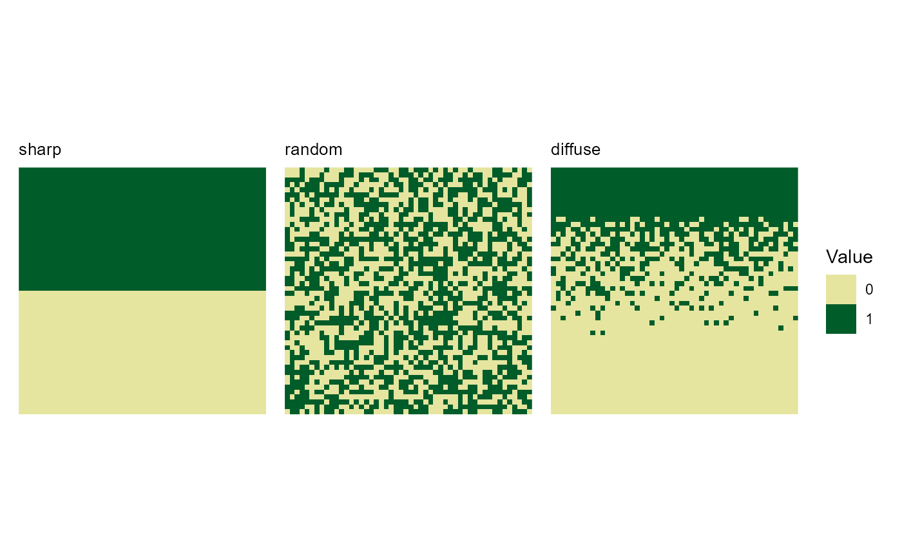
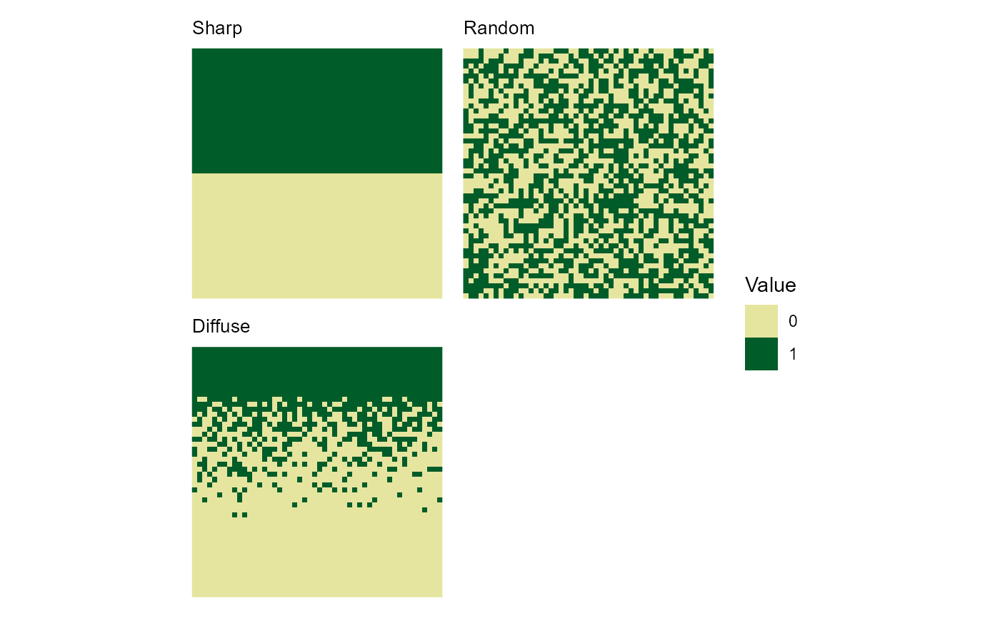
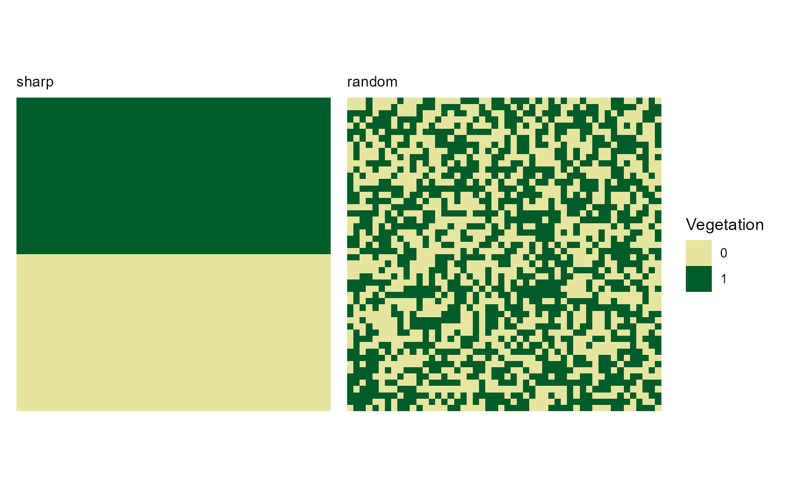
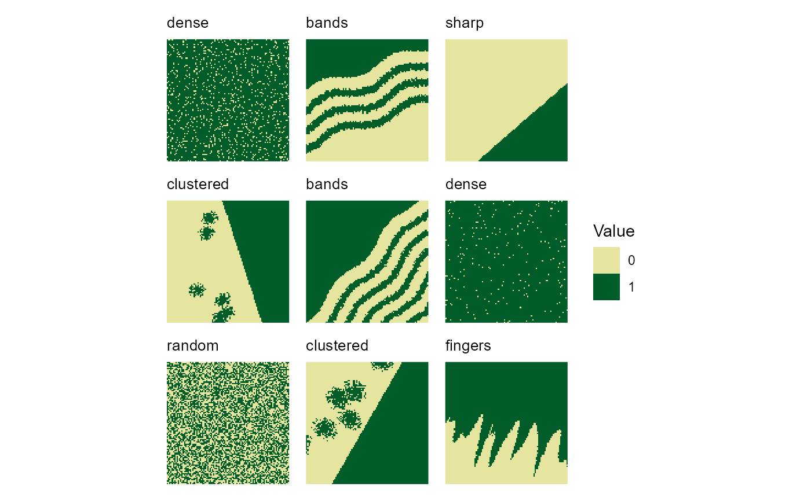

Creates a grid of multiple landscape plots.
Usage
plot_landscape_list(
landscapes,
titles = "pattern",
show_legend = TRUE,
legend_title = "Value",
ncol = NULL,
max_landscapes = 36,
force = FALSE,
subset_index = NULL
)Arguments
- landscapes
List. List of landscape objects to plot. E.g. created by
create_training_landscapes.- titles
Character. Controls the plot titles: - "name": uses only the landscape name - "pattern": uses only the landscape pattern - "both": uses "name (pattern)" format - "none": no title - A character vector with custom titles for each landscape. If providing `subset_index`, ensure titles match the subset length. Default is "pattern"
- show_legend
Logical. Whether to show a single combined legend (default: TRUE).
- legend_title
Character. Title for the legend (default: "Value").
- ncol
Integer. Number of columns in the plot grid (default: NULL).
- max_landscapes
Integer. Maximum number of landscapes to plot (default: 36). Plotting more than 36 landscapes (6x6 grid) is not recommended.
- force
Logical. Override max_landscapes limit (default: FALSE).
- subset_index
Integer vector. Indices of landscapes to plot. Can be used to plot specific landscapes or change plot order (default: NULL).
Examples
# Create a list of different landscapes
landscapes <- list(
create_landscape("sharp", width = 50, height = 50),
create_landscape("random", width = 50, height = 50),
create_landscape("diffuse", width = 50, height = 50)
)
# Default plot (3x1 grid)
plot_landscape_list(landscapes)

# 2-column grid with custom titles
plot_landscape_list(landscapes,
titles = c("Sharp", "Random", "Diffuse"),
ncol = 2)

# Plot only first two landscapes
plot_landscape_list(landscapes,
subset_index = 1:2,
legend_title = "Vegetation")

# Create many landscapes and handle overflow
many_landscapes <- create_training_landscapes(n = 50)
#> Warning: Regular spot placement requested 9 spots but only ~8 positions fit.
#> ℹ Adjusting to maximum feasible spots. Consider decreasing `spot_radius`.
#> ✔ Successfully generated all 50 training landscapes
plot_landscape_list(many_landscapes,
max_landscapes = 9, # Show first 9 only
ncol = 3) # In 3x3 grid
#> Warning: Number of landscapes (50) exceeds maximum (9). Showing first 9. Use force=TRUE to override or subset_index to select a subset of landscapes to plot.
